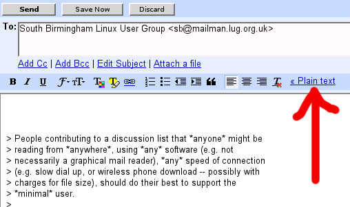

Do you belong to the class of people who, without realising it, send your messages in duplicate: once in nice compact plain text, accompanied by a copy in bulky html, wasting bandwidth, file space, and time of people who archive messages and want to save space.
In addition, there are energy and materials costs associated with transmitting, processing at relays, checking for malware, storing, archiving, and providing extra bandwidth to cope with unnecessary bulk. (See this discussion note.)
If you have never heard of this issue then it is very likely that you are unknowingly using software on which duplication of email you send is turned on by default -- a dreadful and wasteful design feature (like many others found in widely used software).
You may also be one of those annoying people who send space-wasting
image files attached to every email message.
PLEASE do not send them to me.
And even if you don't send your messages in duplicate, you may still
be sending large html files when a small plain text file will convey
exactly what you want to say, just as well.
PLEASE do not send them to me.
The following web sites explain why you should turn the duplication off and avoid sending html when plain text will suffice (except when sending mail to those people who want to get html messages), and how to do it:
Advice on turning off html in many different email programs, and reasons for doing it:
http://www.tcrlist.com/Configuring_Plain_Text.htm
Other information:
Advice on email from Uday Reddy

Also at: http://commandline.org.uk/images/posts/google/Plain-Text-From-Gmail.png
Exceptions
There are cases when you need to send information that includes figures, tables, graphs, etc. that are not easy to format in plain text (especially as different mail readers may format plain text differently, e.g. handling tabs differently and breaking lines in different places.)In such cases it is appropriate to add an attachment to your plain text message containing a file of a different sort, e.g. PDF, HTML, JPEG. (Beware of RTF however: it was originally a platform-independent format, but RTF files produced by Microsoft software often do not display properly on other systems.)
In some cases it may be appropriate for the whole message to be a formatted, printable file, using html, or some mixture.
So although there are cases where including something other than plain text can be justified, if you always send messages in BOTH plain text and html, even when they contain nothing but plain text, then that is wasteful and specially inconsiderate to people who do not wish to receive everything in duplicate.
If you have to send something including diagrams, images, tables, graphs, etc. then send PDF.
But I prefer not to be sent attachments that I have not asked for: if possible, please put your paper on the web, and send me a link. Or if you can't do that send me a plain text summary and ask me if I want to receive your pdf paper. Don't just send it.
Using Word Files
Please do not assume that everyone in the universe
can read Word (doc) files or wishes to read them rather than documents
that conform to published standards, such as ODF or PDF.
Government funded organisations (including Universities of course)
should insist that all their documents do conform to freely
available, published standards, instead of being readable only by using
proprietary software.
Neither he nor anyone else has approved the contents of this file.
Only the author is responsible.
{kind=link}